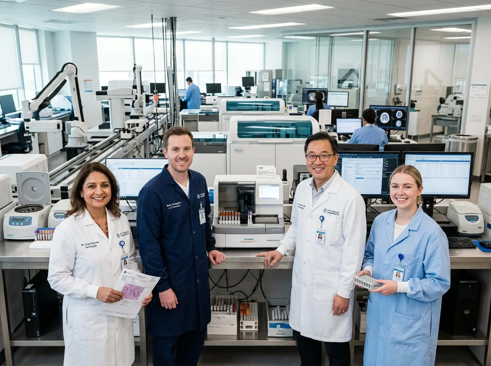

Sterile Collection
Single-use vacuum tubes and gentle phlebotomy by certified technicians at our center or your doorstep.
About Aliva Diagnosis Center
Based in Andheri East, Mumbai, Aliva Diagnosis Center delivers accurate laboratory testing, modern automated pathology, and compassionate, patient-first healthcare support.
Our Story & Facility
At Aliva Diagnosis Center, we believe that behind every blood tube and diagnostic sample is a patient seeking clear answers. Located in Tex Center, Chandivali Farm Road, Andheri East, our facility combines automated clinical analyzers with experienced laboratory specialists.
We adhere to strict quality assurance protocols and daily instrument calibration so that you and your consulting physician can make vital health decisions with absolute confidence.

Diagnostic Excellence
Single-use vacuum tubes and gentle phlebotomy by certified technicians at our center or your doorstep.
Barcoded samples are processed on high-precision automated clinical chemistry and hematology analyzers.
Experienced clinical pathologists audit any abnormal flags and verify reference ranges before final authorization.
Clean, password-protected PDF reports sent directly to your WhatsApp, SMS, and email within 12–24 hours.
Our Foundation
To provide accessible, precise, and dependable diagnostic pathology services that empower patients and physicians to take timely, informed health actions.
To be Mumbai's benchmark neighborhood diagnostic laboratory, recognized for uncompromised clinical accuracy, swift turnaround, and heartfelt patient care.
Zero-compromise hygiene, continuous instrument calibration, zero sample mix-up tolerance, and transparent, ethical communication at every step.
Visit Our Laboratory
Our modern laboratory is fully equipped for walk-in testing, physician consultations, and doorstep home sample pickup dispatch across Andheri East and surrounding neighborhoods.
Explore our full range of tests or speak with our laboratory team today.